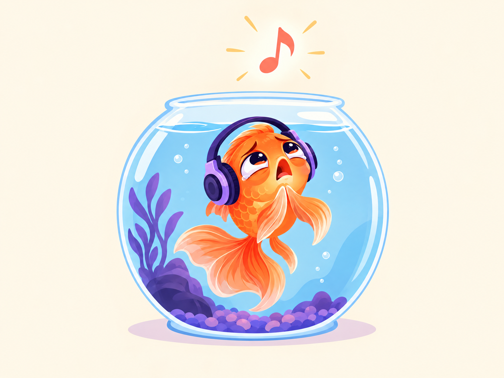

MuseAi Rewinds
MuseAi Rewinds
years of history you can scan at once.
A local-first YouTube time machine
Your history kept receipts.
Meet the rewind that does not need a login, a cloud upload, or a suspiciously confident algorithm. MuseAi turns your Takeout history into the music list you actually lived through.
NO LOGIN
NO SCRAPING
NO SCRAPING
THE SHORT
SONGS COUNT
SONGS COUNT
local files onlyrepeat listens firstevery version stays separatelocal files onlyrepeat listens firstevery version stays separate
The evidence locker
Numbers with a backstory.
Not a popularity contest. A lovingly nosy reconstruction of the songs you kept coming back to.
different ways a song can sneak into your rewind.
uploads. Your Takeout stays on your machine.
A better kind of nosy
It notices the things your dashboard ignores.
Live versions. Tiny artists. Instrumental detours. The song you watched six times and still refuse to admit was a phase.
Inspect the sample data →Repeat-listen main list
Most-played first. One-off songs get their own appendix, where they can be dramatic in peace.
Versions stay separate
Official audio, remix, live take, lyric video: no merging songs just because the title looked familiar.
Genres with a wink
Every repeat-listen song is grouped, with instrumental and no-lyrics tracks called out clearly.
Campaign materials
For people who need convincing.
Two scientifically unserious reminders that your listening history is more interesting than a yearly confetti video.
Outsmart the paper-bag algorithm.
Your history knows what you played. The algorithm is still looking for the exit.

One listen is not a personality.
It is an appendix. A very important appendix, but still an appendix.
Ready when your archive is
Go to the sample rewind ↗Start with a tiny sample.
Run the included local command, then let your listening past explain itself.